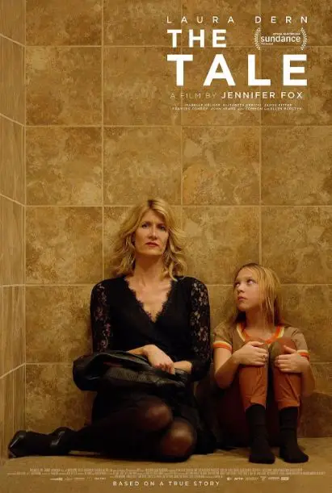
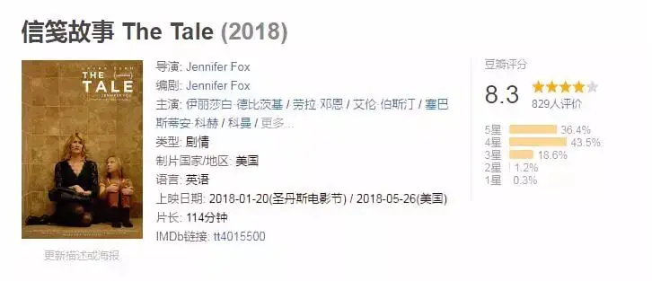
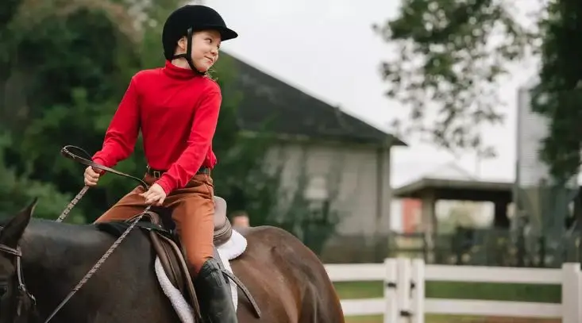
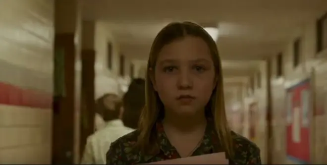
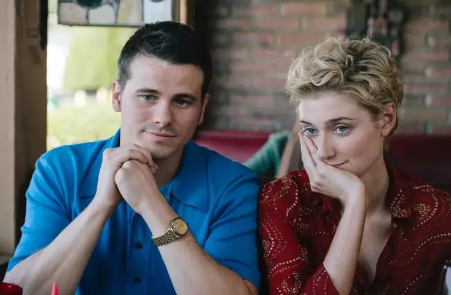
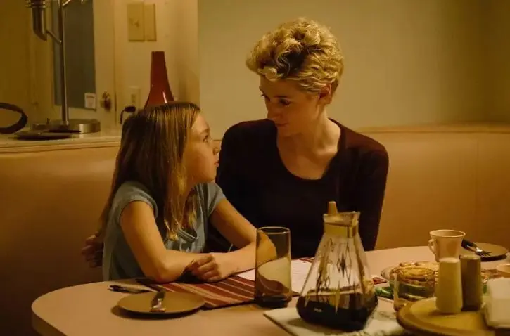
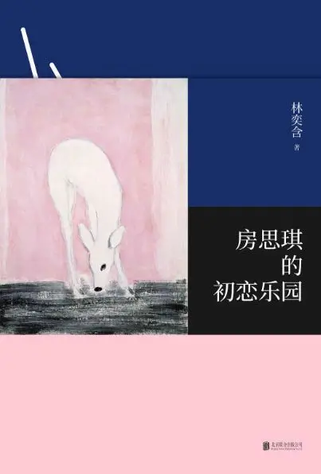
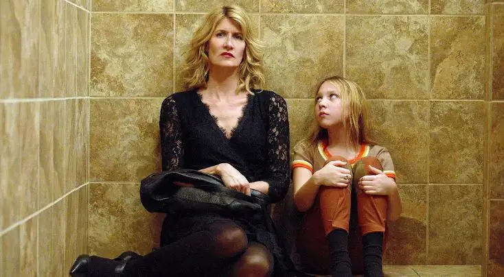
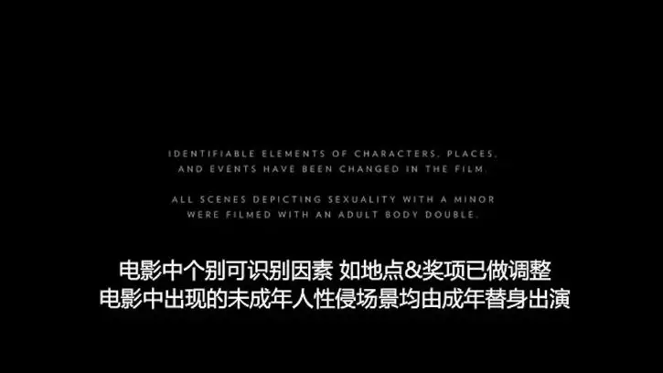
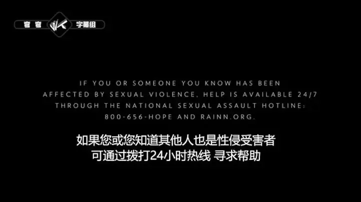

今年的圣丹斯电影节上，一部电影首映结束后，整个剧场没有像往常一样喋喋不休地讨论着电影，而是陷入到一阵沉默中。
这部电影就是著名纪录片导演珍妮弗.福克斯的首部故事片《信笺故事》。

就像林奕含的《房思琪的初恋乐园》一样，这个电影是由珍妮弗.福克斯根据自己小时候被诱奸的真实经历自编自导的作品。
虽然残酷压抑，珍妮弗却用她最大的勇气和更深的思考为每个家庭敲响了警钟！

电影中，珍妮弗也是一个纪录片导演兼大学教授。
| 48岁的珍妮弗
一天，珍妮弗接到母亲一个非常急切的电话。
原来，母亲在家中无意中翻到了珍妮弗三十五年前写下的日记。
日记中描写了珍妮弗和当时的跑步教练比尔之间莫名其妙的“爱情故事”。
字里行间可以看出，珍妮弗和比尔发生了性关系。
而那一年，珍妮弗只有13岁！
这让母亲非常震惊，她将日记寄给珍妮弗，迫切想要知道事情的来龙去脉。
而珍妮弗却很无所谓地告诉母亲，比尔是自己的初恋，就是觉得父母难以理解这样的事，所以一直没有告诉父母。
母亲却伤心地告诉她，你被成年人骗了，那不是爱情，那是强奸。
虽然嘴上说着无所谓，这件事却像石头一样压在了珍妮弗的心上。
当48岁的她看着自己13岁写下的日记时，记忆的碎片开始不断浮现。
记忆中，13岁的自己非常阳光，胸部也开始慢慢发育，自己离成熟女性已经不远。

可是当珍妮弗在家中看到当时的照片时，她才知道，原来13岁的自己那么小，那么稚嫩，而且那样的内向。

原来，记忆并不一定准确，还有可能一直在欺骗自己。
珍妮弗开始怀疑自己对那件事的记忆，于是她四处寻访当时的同学和老师。
就这样，真相和龌蹉在现实和记忆的交叉中逐渐浮现而出。
时隔35年，将近半百的珍妮弗到现在才发现，原来自己当时是被诱奸了！
13岁的时候，爸爸妈妈把珍妮弗送去练习骑马。
在那里，她遇到了温柔漂亮的骑马老师简和强壮帅气的跑步老师比尔。

| 比尔与简
在老师的帮助和鼓励下，珍妮弗骑马的技术取得了很大的进步。
不仅如此，珍妮弗还在他们的身上感受到了一种在家从未拥有的爱。
简和比尔会和自己谈心，会聆听自己的想法，更会鼓励自己突破内向的性格，去做一个无惧任何规则、勇敢做自己的坚强孩子。
珍妮弗为能遇见他们而高兴，简是一个未婚的女人，比尔则是一个离过婚的男人，在小珍妮弗的眼中，他们简直是天生一对。
事实上，他们的确是情人关系，他们还将这个秘密告诉了珍妮弗。
小珍妮弗为自己能够得到两个老师的信任而高兴。
有一天，比尔有机会和珍妮弗独处。
比尔请求珍妮弗脱掉上衣，小珍妮弗很不理解老师的请求。
比尔接着告诉她：
你不要害怕，你以为我会期望你有简那样丰满的乳房么，不会的.....最纯净的爱是与孩子的爱.....成长总是意味着改变.....
在比尔的诱骗下，比尔和13岁的珍妮弗发生了关系。
因为有着剧烈的疼痛，比尔告诉她：改变几乎是痛苦的 ，因此痛苦即是快乐。
因此，珍妮弗忍着剧痛任由这个人面禽兽蹂躏着自己瘦小的身体。
夜里，珍妮弗身体疼痛难忍，一个人躲在厕所里呕吐、哭泣。
更可恶的是，比尔之后竟然告诉珍妮弗：
一夫一妻制、婚姻都在扼杀人的本性，我准备建立一个超越婚姻的团队 ，无视所有规则和承诺。
接着比尔邀请珍妮弗加入这样的团队，一起参加一个四人聚会，而简也在其中........

我不敢想象小珍妮弗到底经历了什么，事实上小珍妮弗也不敢面对这份伤害。
对于一个小孩，虽然她不能像成年人一样对这件事有更清醒的认识。
但是，她从肉体和精神上知道，这件事伤害了她。
哪里有软弱，哪里就有谎言，对于小珍妮弗而言，欺骗自己真的爱上了比尔可能是她唯一的解决办法。
毕竟，你爱上一个人，而那个人让你做的任何事就会合理。
内向的小珍妮弗没有将这件事告诉家人，而是用遗忘和美化记忆来抚慰自己的伤口。
于是，一个受伤的女孩在绝望里却用稚嫩的双手写了一个美好的爱情故事：
我想要以一些美好的东西来讲这个故事.....我很开心能够分享他们的爱情......
这真的让人很痛心！
导演对诱奸的思考是很深的，之所以很多诱奸案的当事人不出声，是因为这是一个罗生门。
被伤害的女孩往往不敢面对真相，会用自欺来安慰自己。
珍妮弗也用这样的方式骗了自己35年。
因此，这场记忆纠正之旅对珍妮弗来说是一项巨大的挑战。
刚开始的不在乎也只是一种逃避和惧怕。
所以母亲很不解地问珍妮弗：为什么要为他找借口 ，你才是受害者！
珍妮弗却告诉母亲：我不需要你或者其他任何人称我为受害者。
事实上，珍妮弗心里已经很脆弱，在自己搞清楚之前，她还没有勇气让母亲或者男友走近自己的伤口。
随着事实不断被还原，我们发现珍妮弗的家庭也是酿成这场悲剧的重要原因。
珍妮弗的家中有五个孩子，一家人总是在争吵。
她在里面好像一个透明人，就像不存在一样。
家人很少去聆听她的心声，这些都导致珍妮弗性格内向敏感。
而这样的孩子正是比尔和简的完美猎物，他们迫切需要别人的爱，被侵犯了也一定不会告诉自己的父母。
整个事情也的确如此，小珍妮弗将简和比尔看作是帮助自己摆脱冰冷家庭的希望。
她写信给比尔，抱怨着家中发生的一切。
这给了两个恶魔乘虚而入的机会，比尔安慰珍妮弗：
他们完全就是伪君子，他们无法接受你将成为女性，他们根本不明白你在我们心中的形象，你无惧于生活....
作为成年人，他们利用了还处于认知迷茫中的孩子，他们努力煽动着珍妮弗的叛逆，暗示着珍妮弗要做一个“成熟”的女性。
| 已故才女林奕含
而这场悲剧的阴影紧紧跟随了珍妮弗一生，她游走于不同男人的床上，却始终难以进入婚姻。
母亲此前一直不明白自己的女儿为什么会这样，甚至告诉珍妮弗：有时候难以置信你是我亲生的。
而当母亲知道这件事后，头发花白的母亲悲伤地告诉珍妮弗：作为一个母亲我失败了......最重要的事上，我没有保护好你！
这是多么惨痛的教训，如果我们不能聆听孩子，那就给了恶魔机会。
如果我们不能和孩子建立相互信任、敞开的沟通关系，即使孩子受伤，他也不会告诉你。

| 林奕含根据自己被诱奸经历完成的长篇小说《房思琪的初恋乐园》
对于这场悲剧，珍妮弗虽然知道了真相，但是她仍然有很多的郁闷和不明白。
她不知道年轻漂亮的简为什么会纵容并且加入这场暴行。
她不知道这个“英雄”比尔到底有没有过良心不安。
她更郁闷自己当初为什么会那么傻。
电影中，导演打破了时空的限制，48岁的珍妮弗得以和那个时候的老师和自己对话。

然而，虽然艺术可以给珍妮弗质问的可能，但却永远改变不了伤痛和残酷。
当最后珍妮弗找到比尔的时候，这个禽兽竟然收获了市杰出公民奖。
而更让珍妮弗气愤的是，这个说婚姻是逆人性的人渣竟然自己结婚了，拥有了自己的家庭。
而珍妮弗却因为他一直难以进入婚姻，走入亲密！

导演怀着巨大的勇气将自己的经历拍了出来，希望这部电影能让更多人警醒。
如果我们不能对孩子进行良好的性教育，不能花时间去爱去陪伴他们，那就是将孩子推向了恶魔之手。

关注并回复：信笺故事
获取电影资源
相关推荐：
为饥渴而燃烧，为生命而起舞！
《超脱》| 我的灵魂失语了
这里没有挑逗你眼目情欲的小鲜肉
也没有挑动你肉体情欲的段子
更没有膨胀你今生骄傲的鸡血
我们只在乎那些最质朴真诚的作品
在那里我们才能恢复真正的想象力
我们也坚信这才是我们真正需要的

ID:Six_hundred_hits
长按二维码，一键关注
【六百击】
-END-
电影评论
尽情分享朋友圈

苹果打赏
通道
小提示：文末广告是腾讯配送广告，内容与本号无关，但您的每次点击（无需反复点）都会给平台带来几毛收益，欢迎您点击支持六百击。